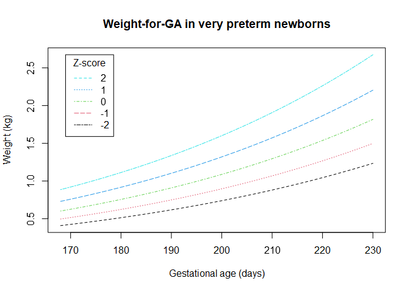

Overview
Produced as part of the Guidance for International Growth Standards project at the London School of Hygiene & Tropical Medicine, gigs provides a single, simple interface for working with the WHO Child Growth standards and outputs from the INTERGROWTH-21st project. You will find functions for converting from anthropometric measures (e.g. weight or length) to z-scores and centiles, and the inverse. Also included are functions for classifying newborn and infant growth according to literature-based cut-offs.
gigs is of use to anyone interested in fetal and child growth, including child health researchers, policymakers, and clinicians. This package is best suited to growth data where the gestational age (GA) of each child is known, as the use of the growth standards included in gigs is GA-dependent. We recommend you check out the available standards section to see if your anthropometric measurements can be converted to z-scores/centiles by gigs. We recommend using gigs to generate continuous or categorical measures of fetal/newborn/child growth, which can then be used in downstream analyses.
Installation
You can install the development version of gigs from GitHub with pak, or from the ropensci R-universe:
# install.packages("pak")
pak::pkg_install(pkg = "ropensci/gigs")
install.packages("gigs", repos = "https://ropensci.r-universe.dev")Rationale + terminology
When working with growth measurements from individual children, it is helpful to compare those measurements to a growth standard, which represents average growth for an population of children. This allows assessment of individual growth - for example, that a baby was born small, but later caught up to its peers in size. It also allows you to compare measurements from different children.
These standards of growth can be made in different ways, but the best studies utilise international samples made of up thousands of healthy fetuses, newborns, or children. In gigs, you’ll find different international growth standards, allowing you to compare growth measures from children with different ages, weights, heights, and more.
In general, you’ll use gigs to transform raw growth measures to z-scores or centiles. Z-scores and centiles represent the location of a measurement within a normal distribution of values, such that:
- A z-score is the number of standard deviations from the mean for a given anthropometric measurement (e.g. height or weight).
- A centile represents the proportion of measurements in some distribution which we would expect to be lower than a measurement we’ve taken. In gigs, these are represented as a value between
0and1. For example,0.5corresponds to the 50th centile (i.e. the mean), whereas0.75corresponds to the 75th centile.
In growth data, z-scores and centiles represent the size a fetus, newborn, or child relative to its peers. Size here is considered relative to a standardising variable, which is usually age but could also be another variable such as their length. By tracking a child’s relative size as they grow, you can see if they are achieving their growth potential or not. If not, this may indicate underlying issues such as ill health or undernutrition.
Classification functions
gigs includes a number of functions which permit fast identification of at-risk infants through classification of suboptimal growth. The cut-offs used are sourced from research literature; you can check the function documentation to see these sources.
Growth classification in data.frame-like objects
Use the classify_growth() function to quickly compute growth indicators in data.frame-like objects. All classify_*()-style functions in gigs use data-masking, so you provide a data.frame-like object in the .data argument and then refer to your column names directly. In classify_growth(), you can also use the .analyses argument to specify which growth indicators you want to classify.
life6mo_newborns <- gigs::life6mo[life6mo$age_days == 0, ]
# Use classify_growth() to get multiple growth indicators at once
life6mo_classified <- classify_growth(
.data = life6mo_newborns,
gest_days = gestage,
age_days = age_days,
sex = as.character(sex),
weight_kg = wt_kg,
lenht_cm = len_cm,
id = as.factor(id),
.outcomes = c("svn", "stunting")
)
#> ! Unused factor levels kept after small vulnerable newborn categorisation:
#> "Term AGA" and "Term LGA".
#> ! Unused factor levels kept after stunting categorisation: "outlier".
#>
#> ── `gigs::classify_growth()` ───────────────────────────────────────────────────
#> ✔ Small vulnerable newborns: Success
#> ✔ Stunting: Success
head(life6mo_classified, n = 4)
#> id gestage sex visitweek pma age_days wt_kg len_cm headcirc_cm muac_cm
#> 1 1 273 M 0 273 0 2.30 42.06667 33.26667 9.433333
#> 28 4 250 F 0 250 0 1.50 42.03333 30.03333 8.066667
#> 36 5 238 F 0 238 0 2.39 43.46667 33.63333 9.166667
#> 56 8 240 F 0 240 0 1.80 41.73333 31.46667 8.033334
#> birthweight_centile svn lhaz stunting stunting_outliers
#> 1 0.010765424 Term SGA -3.5406446 stunting_severe stunting_severe
#> 28 0.002833163 Preterm SGA -2.2854751 stunting stunting
#> 36 0.756367868 Preterm AGA -0.6087434 not_stunting not_stunting
#> 56 0.126440075 Preterm AGA -1.6989568 not_stunting not_stuntingWhen using classify_growth(), you will be informed which of the analyses you wanted to run were successful. In the example below, because lenht_cm is not specified, stunting indicators cannot be computed.
life6mo_classified <- classify_growth(
.data = life6mo_newborns,
gest_days = gestage,
age_days = age_days,
sex = as.character(sex),
weight_kg = wt_kg,
id = as.factor(id),
.outcomes = c("svn", "stunting")
)
#> ! Unused factor levels kept after small vulnerable newborn categorisation:
#> "Term AGA" and "Term LGA".
#>
#> ── `gigs::classify_growth()` ───────────────────────────────────────────────────
#> ✔ Small vulnerable newborns: Success
#> ! Stunting: Not computed (`lenht_cm` not supplied)
head(life6mo_classified, n = 4)
#> id gestage sex visitweek pma age_days wt_kg len_cm headcirc_cm muac_cm
#> 1 1 273 M 0 273 0 2.30 42.06667 33.26667 9.433333
#> 28 4 250 F 0 250 0 1.50 42.03333 30.03333 8.066667
#> 36 5 238 F 0 238 0 2.39 43.46667 33.63333 9.166667
#> 56 8 240 F 0 240 0 1.80 41.73333 31.46667 8.033334
#> birthweight_centile svn
#> 1 0.010765424 Term SGA
#> 28 0.002833163 Preterm SGA
#> 36 0.756367868 Preterm AGA
#> 56 0.126440075 Preterm AGAYou can also use classify_*() functions which are specific to the growth indicator you’d like to calculate, for example classify_svn() to get small, vulnerable newborn classifications for each infant:
# Small vulnerable newborns - note no ID parameter, as it is assumed that all
# measures are taken at birth
life6mo_svn <- classify_svn(
.data = life6mo_newborns,
weight_kg = wt_kg,
gest_days = gestage,
sex = as.character(sex)
)
#> ! Unused factor levels kept after small vulnerable newborn categorisation:
#> "Term AGA" and "Term LGA".
head(life6mo_svn, n = 4)
#> id gestage sex visitweek pma age_days wt_kg len_cm headcirc_cm muac_cm
#> 1 1 273 M 0 273 0 2.30 42.06667 33.26667 9.433333
#> 28 4 250 F 0 250 0 1.50 42.03333 30.03333 8.066667
#> 36 5 238 F 0 238 0 2.39 43.46667 33.63333 9.166667
#> 56 8 240 F 0 240 0 1.80 41.73333 31.46667 8.033334
#> birthweight_centile svn
#> 1 0.010765424 Term SGA
#> 28 0.002833163 Preterm SGA
#> 36 0.756367868 Preterm AGA
#> 56 0.126440075 Preterm AGAConversion functions
Available international growth standards
gigs facilitates the proper use of international growth standards, which are growth charts developed using international samples of healthy singleton children born to mothers that had their health needs met during pregnancy. They represent an international standard of ‘optimal’ growth. gigs implements international growth standards from the WHO and INTERGROWTH-21st project:
-
ig_nbs- INTERGROWTH-21st Newborn Size standards (including very preterm)Component standards
Acronym Description Unit xrangewfgaweight-for-GA kg 168 to 300 days lfgalength-for-GA cm 168 to 300 days hcfgahead circumference-for-GA cm 168 to 300 days wlrfgaweight-to-length ratio-for-GA kg/cm 168 to 300 days ffmfgafat-free mass-for-GA kg 266 to 294 days bfpfgabody fat percentage-for-GA % 266 to 294 days fmfgafat mass-for-GA kg 266 to 294 days -
ig_nbs_ext- Extended INTERGROWTH-21st Newborn Size standards (including very preterm)Component standards
Acronym Description Unit xrangewfgaweight-for-GA kg 154 to 314 days lfgalength-for-GA cm 154 to 314 days hcfgahead circumference-for-GA cm 154 to 314 days -
ig_png- INTERGROWTH-21st Postnatal Growth of Preterm Infants standardsComponent standards
Acronym Description Unit xrangewfaweight-for-age kg 27 to ≤64 exact weeks lfalength-for-age cm 27 to ≤64 exact weeks hcfahead circumference-for-age cm 27 to ≤64 exact weeks wflweight-for-length kg 35 to 65 cm -
ig_fet- INTERGROWTH-21st Fetal standardsComponent standards
Acronym Description Unit xrangehcfgahead circumference-for-GA mm 98 to 280 days bpdfgabiparietal diameter-for-GA mm 98 to 280 days acfgaabdominal circumference-for-GA mm 98 to 280 days flfgafemur length-for-GA mm 98 to 280 days ofdfgaoccipito-frontal diameter for-GA mm 98 to 280 days efwfgaestimated fetal weight-for-GA g 154 to 280 days sfhfgasymphisis-fundal height-for-GA mm 112 to 294 days crlfgacrown-rump length-for-GA mm 58 to 105 days gafcrlGA-for-crown-rump length days 15 to 95 mm gwgfgagestational weight gain-for-GA kg 98 to 280 days pifgapulsatility index-for-GA 168 to 280 days rifgaresistance index-for-GA 168 to 280 days sdrfgasystolic/diastolic ratio-for-GA 168 to 280 days tcdfgatranscerebellar diameter-for-GA mm 98 to 280 days tcdfgaGA-for-transcerebellar diameter mm 98 to 280 days poffgaparietal-occipital fissure-for-GA mm 105 to 252 days sffgaSylvian fissue-for-GA mm 105 to 252 days avfgaanterior horn of the lateral ventricle-for-GA mm 105 to 252 days pvfgaatrium of the posterior horn of the lateral ventricle-for-GA mm 105 to 252 days cmfgacisterna magna-for-GA mm 105 to 252 days hefwfgaHadlock estimated fetal weight-for-GA g 126 to 287 days -
who_gs- WHO Child Growth Standards for term infantsComponent standards
Acronym Description Unit xrangewfaweight-for-age kg 0 to 1856 days bfaBMI-for-age kg/m2 0 to 1856 days lhfalength/height-for-age cm 0 to 1856 days hcfahead circumference-for-age cm 0 to 1856 days wflweight-for-height kg 45 to 110 cm wfhweight-for-length kg 65 to 120 cm acfaarm circumference-for-age cm 91 to 1856 days ssfasubscapular skinfold-for-age mm 91 to 1856 days tsfatriceps skinfold-for-age mm 91 to 1856 days
Usage
Conversion functions are named according to the conversion they perform. Either they convert measured values to z-scores/centiles (value2zscore()/value2centile()), or they generate expected values for given z-scores/centiles (zscore2value()/centile2value()).
You tell gigs which international growth standard to use with the family and acronym parameters. The family parameter denotes the set of growth standards you want to use - e.g. "ig_nbs" for the INTERGROWTH-21st Newborn Size standards (including very preterm). The acronym parameter describes which exact growth standard you want out of all the growth standards in your ‘family’ of standards.
For example, to convert values to z-scores in the weight-for-GA standard from the INTERGROWTH-21st Newborn Size standards, you would run value2zscore(..., family = "ig_nbs", acronym = "wfga").
Similarly, the conversion of length-for-age values to centiles in term and preterm infants could be performed with the WHO Child Growth standards and INTERGROWTH-21st Postnatal Growth of Preterm Infants standards, respectively:
- Preterm infants:
value2centile(..., family = "ig_png", acronym = "lfa") - Term infants:
value2centile(..., family = "who_gs", acronym = "lhfa")
If you don’t know which units are used for a given growth standard, the report_units() function will help you. Run it with your family and acronym combination to get help:
report_units(family = "ig_nbs", acronym = "wfga")
#> You're using "wfga" from the INTERGROWTH-21st Newborn Size Standards
#> ("ig_nbs").
#> ℹ Units for `y`: Weight (kg).
#> ℹ Units for `x`: Gestational age (days).Values to z-scores/centiles
These functions allow easy conversion from measured values to z-scores or centiles for the standard used.
# Convert from z-scores for individual values...
value2zscore(y = 0.785, x = 182, sex = "F",
family = "ig_nbs", acronym = "wfga") |>
round(digits = 2)
#> [1] 0
# .. or for multiple inputs
value2centile(y = 0.785, x = seq(175, 196, by = 7), sex = "F",
family = "ig_nbs", acronym = "wfga") |>
round(digits = 2)
#> [1] 0.75 0.50 0.25 0.09
# You can also get centiles
value2centile(y = c(2.86, 3.12, 3.12, 3.43, 3.77, 4.10), x = 40, sex = "M",
family = "ig_png", acronym = "wfa") |>
round(digits = 2)
#> [1] 0.10 0.25 0.25 0.50 0.75 0.90Z-scores/centiles to values
These functions convert z-scores to expected anthropometric measurements. They are mostly useful for the creation of reference curves (see below).
# Convert from z-scores for individual values...
zscore2value(z = 0, x = 182, sex = "F",
family = "ig_nbs", acronym = "wfga") |>
round(digits = 3)
#> [1] 0.785
# .. or for multiple inputs
zscore2value(z = 0, x = seq(182, 204, by = 7), sex = "F",
family = "ig_nbs", acronym = "wfga") |>
round(digits = 3)
#> [1] 0.785 0.893 1.013 1.147
# You can do the same for centiles
centile2value(p = c(0.1, 0.25, 0.5, 0.75, 0.9), x = 40, sex = "M",
family = "ig_png", acronym = "wfa") |>
round(digits = 2)
#> [1] 2.87 3.12 3.43 3.77 4.11Reference curves
We can use gigs to generate reference curves for the standards by getting curves for the expected weight at multiple z-scores across multiple gestational ages. We would usually recommend ggplot2 for such visualisation, but do not use it here to reduce our package’s dependencies.
z_score_range <- -2:2
gestage_range <- 168:230
ref <- mapply(z_score_range,
FUN = function(z) {
gigs::zscore2value(z = z,
x = gestage_range,
sex = "F",
family = "ig_nbs",
acronym = "wfga")
})
matplot(ref, x = gestage_range, col = 1:5, type = "l", lty = 2:6,
xlab = "Gestational age (days)",
ylab = "Weight (kg)")
title(main = "Weight-for-GA in very preterm newborns")
legend(x = min(gestage_range) + 1, y = ref[length(ref)], legend = 2:-2,
title = "Z-score", col = 5:1, lty = 2:6)
Other packages
Other R packages can be used to analyse growth data with international standards, but have limitations which are not present in gigs. There are also software packages external to R which implement these standards. The table below describes these packages, and to what extent they have implemented functions that let users convert anthropometric measurements to z-scores/centiles in each set of standards implemented in gigs - the WHO Child Growth standards, INTERGROWTH-21st Newborn Size standards (including Very Preterm), and the INTERGROWTH-21st Postnatal Growth standards for preterm infants. No other packages (except gigs for Stata) includes the extended versions of the INTERGROWTH-21st Newborn Size standards (incl. Very Preterm).
A tick (✅) indicates that all possible standards are included in a package, a red cross (❌) indicates that these standards are completely missing, and a warning sign (⚠️) indicates that some of these standards are implemented but not others.
| Software | Platform | WHO (0-5 years) | IG-21st NBS | IG-21st PNG | IG-21st Fetal | Functionality |
|---|---|---|---|---|---|---|
| gigs | R | ✅ | ✅ | ✅ | ✅ | Values ↔︎ z-scores/centiles |
| anthro | R | ✅ | ❌ | ❌ | ❌ | Values → z-scores |
| AGD | R | ✅ | ❌ | ❌ | ❌ | Values ↔︎ z-scores |
| childsds | R | ✅ | ❌ | ❌ | ❌ | Values → z-scores/centiles |
| ki-tools/growthstandards | R | ✅ | ✅ | ⚠️ | ⚠️ | Values ↔︎ z-scores/centiles |
| nutriverse/intergrowth | R | ❌ | ❌ | ❌ | ⚠️ | Values → z-scores/centiles |
| sitar | R | ✅ | ❌ | ❌ | ❌ | Values ↔︎ z-scores/centiles |
| zscorer | R | ✅ | ❌ | ❌ | ❌ | Values → z-scores/centiles |
| gigs (Stata) | Stata | ✅ | ✅ | ✅ | ✅ | Values ↔︎ z-scores/centiles |
| zanthro (Stata) | Stata | ✅ | ❌ | ❌ | ❌ | Values → z-scores/centiles |
| gigs (SAS) | SAS | ✅ | ✅ | ✅ | ✅ | Values ↔︎ z-scores/centiles |
We have benchmarked these implementations against each other for conversion of values to z-scores in the WHO Child Growth Standards and different sets of INTERGROWTH-21st standards. The table below shows the relative speed of each software package when processing 100,000 inputs. The code used to generate these timings can be seen online in the gigs benchmarking article.
| Software | Platform | WHO (0-5 years) (ms) | IG-21st NBS (ms) | IG-21st PNG (ms) | IG-21st Fetal (ms) |
|---|---|---|---|---|---|
| gigs | R | 101 | 79 | 21 | 11 |
| anthro | R | 2178 | ❌ | ❌ | ❌ |
| AGD | R | 113 | ❌ | ❌ | ❌ |
| childsds | R | 125 | ❌ | ❌ | ❌ |
| ki-tools/growthstandards | R | 89 | 70 | 41 | 12 |
| nutriverse/intergrowth | R | ❌ | ❌ | ❌ | 17 |
| sitar | R | 46 | ❌ | ❌ | ❌ |
| zscorer | R | NA | ❌ | ❌ | ❌ |
| gigs (Stata) | Stata | 351 | 382 | 108 | 58 |
| zanthro (Stata) | Stata | 1063 | ❌ | ❌ | ❌ |
| gigs (SAS) | SAS | 186 | 187 | 89 | 90 |
Note: zscorer is NA because we couldn’t time it for 100,000 inputs (it takes too long).
The WHO and INTERGROWTH-21st standards are also available in standalone form, available from the WHO website and INTERGROWTH-21st website, respectively. The INTERGROWTH-21st website also includes download links for Excel-based calculators in some standards.
Authors + Citation
S. R. Parker Maternal, Adolescent, Reproductive, and Child Health Centre, London School of Hygiene & Tropical Medicine
Dr L. Vesel Ariadne Labs, Brigham and Women’s Hospital, Harvard T.H. Chan School of Public Health
Professor E. O. Ohuma Maternal, Adolescent, Reproductive, and Child Health Centre, London School of Hygiene & Tropical Medicine
Citation
Parker SR, Vesel L, Ohuma EO (2025). gigs: A package for standardising fetal, neonatal, and child growth assessment. Journal of Open Source Software, 10(106):7655. doi: 10.21105/joss.07655.
Code of Conduct
Please note that the gigs package is released with a Contributor Code of Conduct. By contributing to this project you agree to abide by its terms.
References
- INTERGROWTH-21st Newborn Size standards (including very preterm)
- Villar J, Cheikh Ismail L, Victora CG, Ohuma EO, Bertino E, Altman DG, et al. International standards for newborn weight, length, and head circumference by gestational age and sex: the Newborn Cross-Sectional Study of the INTERGROWTH-21st Project. Lancet 2014, 384(9946):857-68. doi: 10.1016/S0140-6736(14)60932-6
- Villar J, Giuliani F, Fenton TR, Ohuma EO, Ismail LC, Kennedy SH et al. INTERGROWTH-21st very preterm size at birth reference charts. Lancet 2016, 387(10021):844-45. doi: 10.1016/S0140-6736(16)00384-6
- Villar J, Puglia FA, Fenton TR, Ismal LC, Staines-Urias E, Giuliani F, et al. Body composition at birth and its relationship with neonatal anthropometric ratios: the newborn body composition study of the INTERGROWTH-21st project. Pediatric Research 2017, 82:305-316. doi: 10.1038/pr.2017.52
- INTERGROWTH-21st Postnatal Growth of Preterm Infants standards
- Villar J, Giuliani F, Bhutta ZA, Bertino E, Ohuma EO, Ismail LC et al. Postnatal growth standards for preterm infants: the Preterm Postnatal Follow-up Study of the INTERGROWTH-21st Project. Lancet Glob Health 2015, 3(11):e681-e691. doi: 10.1016/S2214-109X(15)00163-1
- INTERGROWTH-21st Fetal standards
- Papageorghiou AT, Ohuma EO, Altman DG, Todros T, Cheikh Ismail L, Lambert A et al. International standards for fetal growth based on serial ultrasound measurements: the Fetal Growth Longitudinal Study of the INTERGROWTH-21st Project. Lancet 2014, 384(9946):869-79. doi: 10.1016/S0140-6736(14)61490-2
- Stirnemann J, Villar J, Salomon LJ, Ohuma EO, Lamber A, Victoria CG et al. International Estimated Fetal Weight Standards of the INTERGROWTH-21st Project. Ultrasound Obstet Gynecol 2016, 49:478-486 doi: 10.1002/uog.17347
- Stirnemann J, Salomon LJ, Papageorghiou AT. INTERGROWTH-21st standards for Hadlock’s estimation of fetal weight. Ultrasound Obstet Gynecol 2020, 56(6):946-948 doi: 10.1002/uog.22000
- Papageorghiou AT, Ohuma EO, Gravett MG, Lamber A, Noble JA, Pang R et al. International standards for symphysis-fundal height based on serial measurements from the Fetal Growth Longitudinal Study of the INTERGROWTH-21st Project: prospective cohort study in eight countries. BMJ 2016, 355:i5662 doi: 10.1136/bmj.i5662
- Papageorghiou AT, Kennedy SH, Salomon LJ, Ohuma EO, Cheikh Ismail L, Barros FC et al. International standards for early fetal size and pregnancy dating based on ultrasound measurement of crown-rump length in the first trimester of pregnancy. Ultrasound Obstet Gynecol 2014, 44(6):641-48 doi: 10.1002/uog.13448
- Cheikh Ismail L, Bishop DC, Pang R, Ohuma EO, Kac G, Abrams B et al. Gestational weight gain standards based on women enrolled in the Fetal Growth Longitudinal Study of the INTERGROWTH-21st Project: a prospective longitudinal cohort study. BMJ 2016, 352:i555 doi: 10.1136/bmj.i555
- Drukker L, Staines-Urias E, Villar J, Barros FC, Carvalho M, Munim S et al. International gestational age-specific centiles for umbilical artery Doppler indices: a longitudinal prospective cohort study of the INTERGROWTH-21st Project. Am J Obstet Gynecol 2021, 222(6):602.e1-602.e15 doi: 10.1016/j.ajog.2020.01.012
- Rodriguez-Sibaja MJ, Villar J, Ohuma EO, Napolitano R, Heyl S, Carvalho M et al. Fetal cerebellar growth and Sylvian fissure maturation: international standards from Fetal Growth Longitudinal Study of INTERGROWTH-21st Project Ultrasound Obstet Gynecol 2021, 57(4):614-623 doi: 10.1002/uog.22017
- Napolitano R, Molloholli M, Donadono V, Ohuma EO, Wanyonyi SZ, Kemp B et al. International standards for fetal brain structures based on serial ultrasound measurements from Fetal Growth Longitudinal Study of INTERGROWTH-21st Project Ultrasound Obstet Gynecol 2020, 56(3):359-370 doi: 10.1002/uog.21990
- WHO Child Growth Standards
- de Onis M, Garza C, Victora CG, Onyango AW, Frongillo EA, Martines J. The WHO Multicentre Growth Reference Study: planning, study design, and methodology Food Nutr Bull. 2004, 25(1 Suppl):S15-26. doi: 10.1177/15648265040251s104
- World Health Organisation. WHO child growth standards: length/height-for-age, weight-for-age, weight-for-length, weight-for-height and body mass index-for-age: methods and development. Technical report, WHO, Geneva, 2006.
- World Health Organisation. WHO child growth standards: head circumference-for-age, arm circumference-for-age, triceps skinfold-for-age and subscapular skinfold-for-age: methods and development. Technical report, WHO, Geneva, 2007.